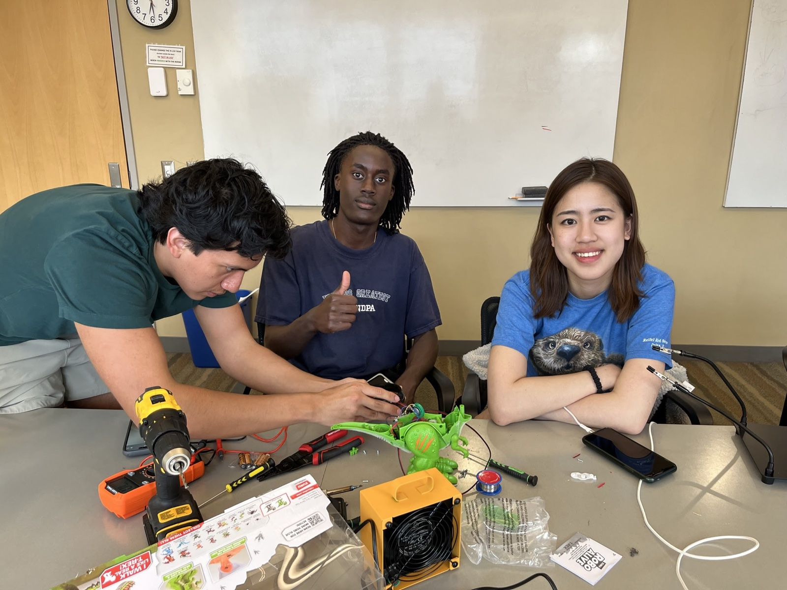
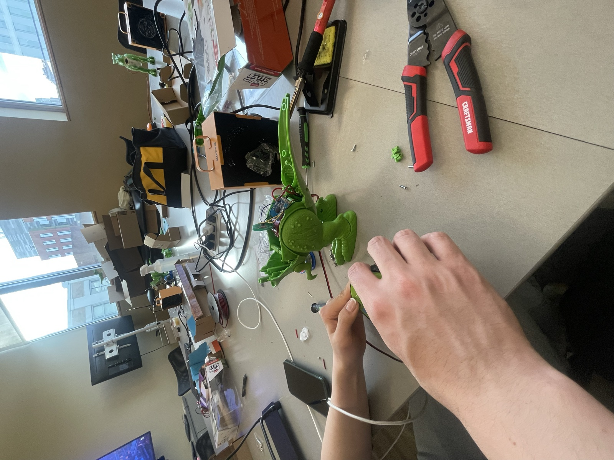
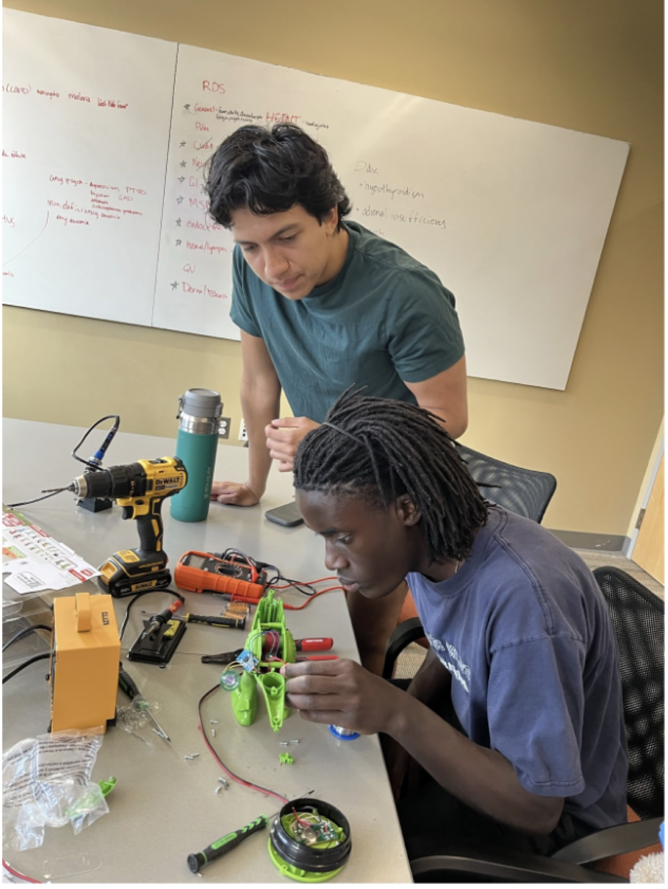
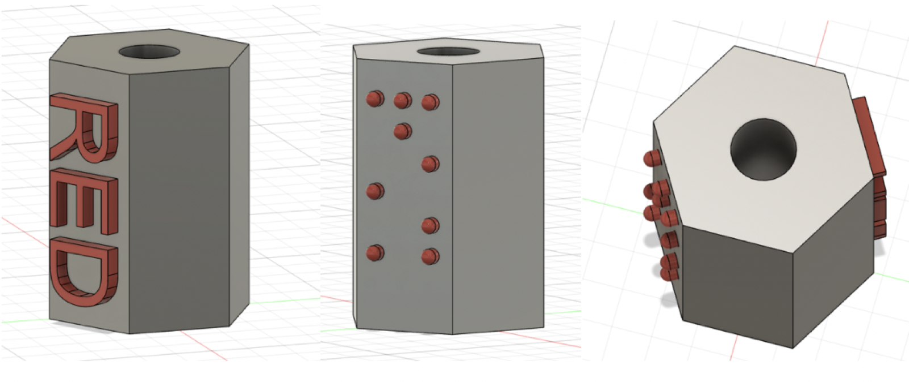
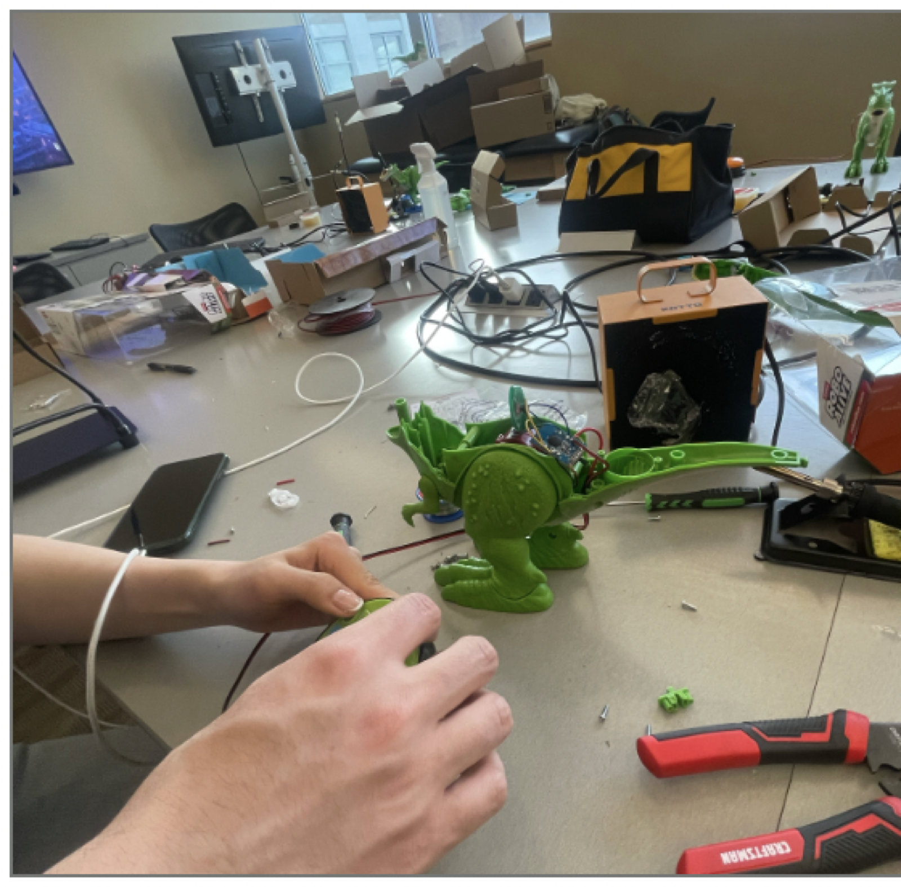
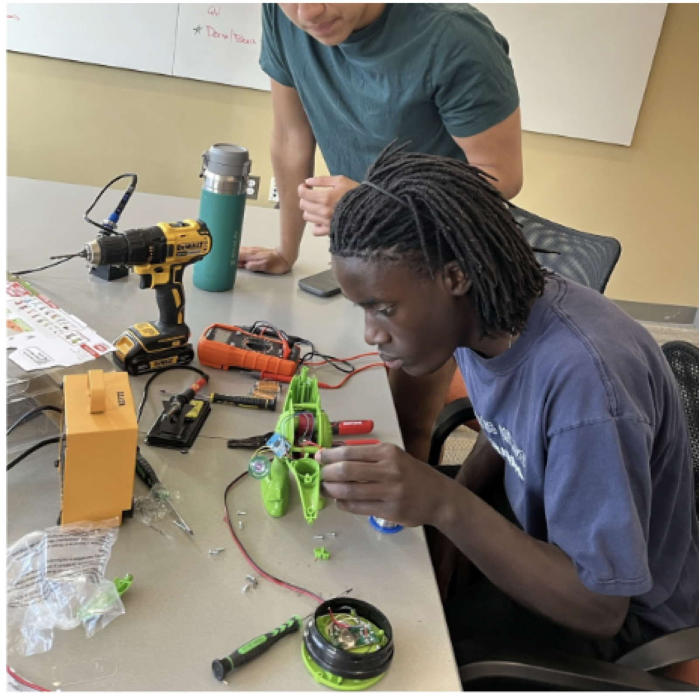
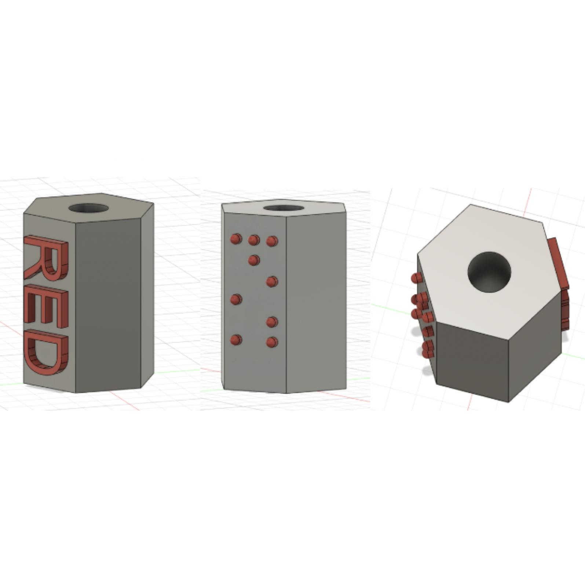

Meeting Street Toys
Worked with Brown Medical School students as part of a team designing adaptive toys for students with disabilities at the Rhode Island Meeting Street School.
CATCH is a club through the Brown Warren Alpert Medical School that I am a member of, focused on designing adaptive toys for students with disabilities at the Rhode Island Meeting Street School. As part of the club, I developed concepts for braille crayon covers and used soldering to connect toy dinosaurs and school buses to buttons, making them more accessible for students with limited dexterity.






